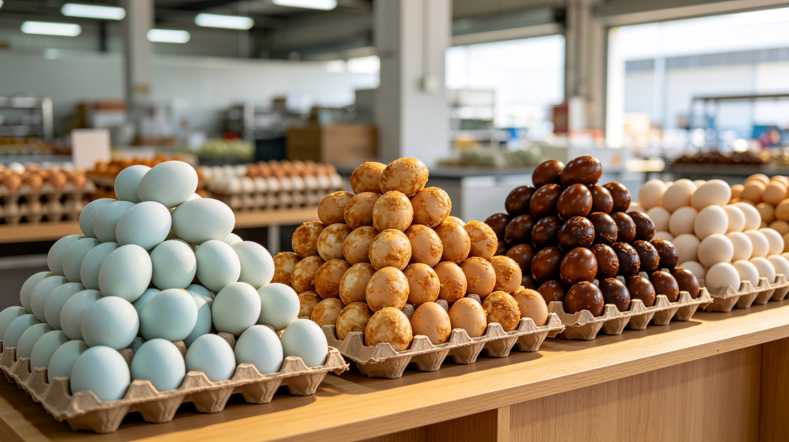

Katalog Detail Komoditas Pangan
Fokus kami adalah menyediakan bahan baku murni dengan tingkat kebersihan tinggi. Berikut adalah enam komoditas unggulan kami beserta spesifikasi target industri.

Madu Curah Murni (Industrial Raw Honey)
Bahan baku esensial untuk pabrik makanan, minuman kesehatan, dan obat herbal. Kami menyuplai madu mentah asli tanpa tambahan pemanis buatan, tanpa sirup gula, dan tanpa pasteurisasi berlebih guna mempertahankan profil enzim alami (Diastase). Disajikan dalam kemasan berskala industri yang terjamin keamanan pangannya.
| Parameter Kualitas Dasar | Standar Jaminan Mutu |
|---|---|
| Tingkat Kemurnian (Purity) | 100% Madu Asli Alam |
| Kadar Air (Moisture Content) | Maksimal 22% (Sesuai SNI Madu) |
| Kesiapan Uji Laboratorium | Siap untuk uji HMF dan Enzim Diastase oleh tim QC Pabrik |
| Kemasan Logistik | Jerigen Food-Grade HDPE / Drum Industri Spesifik Pangan |
Bawang Merah Varietas Bima Brebes
Kabupaten Brebes adalah pusat lumbung bawang merah nasional. Kami secara khusus mendistribusikan bawang merah varietas Bima yang memiliki karakteristik unggul: aroma yang sangat tajam, warna merah gelap pekat, dan ketahanan simpan yang lama (kondisi askip). Komoditas ini sangat vital bagi produsen bumbu kering, pasta bawang, mie instan, dan industri bawang goreng.
| Kualifikasi Penyortiran | Detail Parameter Target |
|---|---|
| Kategori Ukuran (Grading) | Super Cross, Super, Medium, atau sesuai pesanan pabrik |
| Kondisi Umbi Fisik | Kering Askip (Tahan Simpan Lama), Bebas Busuk |
| Tingkat Kebersihan Sortasi | Bebas dari gumpalan tanah, daun dan akar dipotong rapi |


Bawang Putih Lokal Pilihan
Berbeda dengan varietas impor, bawang putih lokal yang kami suplai memiliki profil rasa (*flavor profile*) dan aroma minyak atsiri yang jauh lebih tajam dan pekat. Meskipun ukurannya cenderung lebih kecil, efisiensi rasanya membuatnya sangat diminati oleh industri produsen kaldu, bumbu penyedap rasa, saus, dan industri pengolahan daging olahan.
| Kualifikasi Penyortiran | Detail Parameter Target |
|---|---|
| Profil Rasa Aroma | Pekat dan Tajam (Khas Lokal) |
| Kondisi Umbi Fisik | Kering, Utuh, Tidak Keriput |
| Tingkat Kebersihan Sortasi | Bebas dari kelembapan berlebih, bersih dari sisa tanah |
Jagung Pipil Kering Industri
Jagung kuning pipil dengan standar kualitas pabrik. Kami menjaga tingkat kelembapan secara ketat untuk mencegah pertumbuhan jamur dan toksin (seperti aflatoksin) selama penyimpanan di silo. Komoditas ini merupakan bahan baku utama bagi pabrik pakan ternak skala besar (*Feedmill*) serta industri ekstraksi pati jagung (*corn starch*).
| Parameter Kualitas | Standar Jaminan Mutu Target |
|---|---|
| Kadar Air (Moisture Content) | Maksimal 15% (Aman Simpan Lama) |
| Tingkat Biji Pecah (Broken) | Sangat Minimal (Sesuai Grade Pabrik) |
| Keamanan Pangan | Bebas Jamur, Bebas Kutu, Bebas Kotoran Tongkol |


Beras Skala Grosir (Premium & Medium)
Beras hasil gilingan langsung dari sentra persawahan lokal Jawa Tengah. Kami menjamin beras bebas dari pemutih, pewangi, dan pengawet buatan. Menawarkan tingkat kepatahan biji (*broken grain*) yang dapat disesuaikan dengan permintaan pabrik makanan olahan, jaringan katering industri besar, maupun untuk program bantuan sosial.
| Parameter Kualitas | Standar Jaminan Mutu Target |
|---|---|
| Tingkat Derajat Sosoh | Maksimal (Warna putih alami) |
| Tingkat Kepatahan (Broken) | Dapat disesuaikan (Kualitas Premium / Medium) |
| Tingkat Kebersihan | Bebas batu kecil, gabah, dan benda asing lainnya |
Telur Asin Khas Brebes Skala B2B
Komoditas ikonik Brebes yang kami angkat pengadaannya ke skala korporasi (B2B). Kami menyuplai telur asin berkualitas tinggi (tersedia opsi mentah, rebus matang, atau asap) untuk mendukung industri kuliner kekinian. Sangat diminati oleh *franchise* restoran hidangan laut, serta pabrik makanan ringan (*snack*) yang mengekstraksi kuning telur sebagai bumbu perasa saus telur asin (*salted egg flavor*).
| Parameter Spesifikasi Target | Standar Jaminan Mutu |
|---|---|
| Profil Kuning Telur Fisik | Masir, Berminyak, dan Berwarna Jingga Pekat |
| Kondisi Cangkang Luar | Utuh Sempurna, Bersih dari sisa tanah liat/abu |
| Pengemasan Logistik Khusus | Menggunakan Krat telur khusus untuk mencegah risiko pecah selama transportasi logistik |
